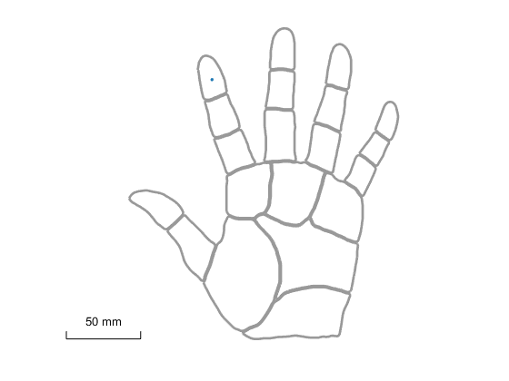
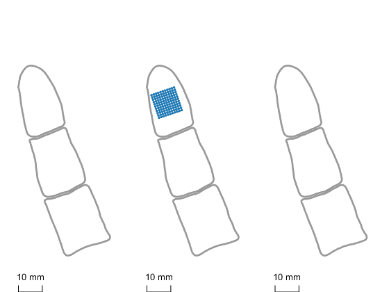
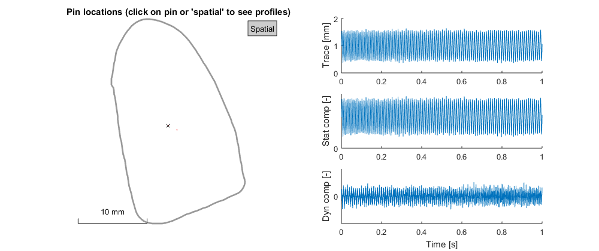
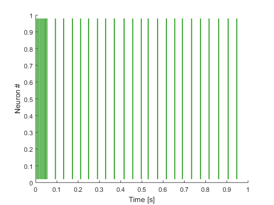
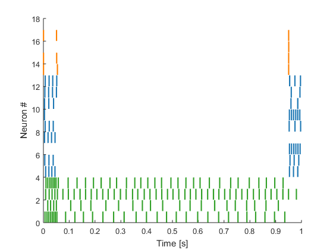

TouchSim classes
Contents
Afferent
Object that represents a single tactile afferent.
Properties
- class: Afferent class, needs to be 'SA1', 'RA', or 'PC'.
- location: Location on skin in mm where afferent is terminating, default [0 0]. Coordinate system is based on the hand model with the origin centered on the tip of the index finger.
- depth: Depth of afferent below the skin surface in mm. Default values are chosen based on afferent class. In most cases, these values should not require changing.
- noisy: Adds noise to membrane potential, if set to true, otherwise model runs purely deterministically; default true.
- delay: If true, sets delay of afferent response to estimated delay at recording site along the nerve, necessary for model fitting but otherwise unnecessaryl default false.
- iSA1: true, if model is an SA1 afferents. Can be accessed, but not set.
- iRA: true, if model is an RA afferent. Can be accessed, but not set.
- iPC: true, if model is a PC afferent. Can be accessed, but not set.
- idx: model ID, defaults to a random value. For example, if set to 1, will select the first model of the respective afferent class. There are 4 SA1, 9 RA, and 4 PC models in total.
- parameters: a vector containing the 13 parameters for the spiking model, is chosen based on afferent class and model ID (idx) parameters. In general, this parameter should not be set directly.
- model: type of spiking model, always set to 'IF'.
Methods
- a = Afferent(class,varargin): Constructs a Afferent object.
- class: Afferent class, needs to be 'SA1', 'RA', or 'PC'.
- varargin: Additional afferent parameters: location: afferent location, default [0 0]; idx: afferent model, default chosen randomly from all models of given class; noisy: adds input jitter if true, default true; delay: adds neural delay if true, only needed to match fitting data, default false; parameters: model parameters, default automatically chosen based on class and idx.
- r = response(stim,flag_distOnHand):Calculate afferent response
to given stimulus, returns Response object.
- stim: Stimulus object.
- flag_distOnHand: Determines whether wave propagation is calculated based on geometry of the hand model (if set to true), or based on absolute distance alone, ignoring gaps between fingers (if set to false), default false. Activating this setting will increase computation time for wave propagation considerably, but this parameter is essential if the responses of afferents all over the hand are considered.
- plot(ax,col,varargin): Generates a figure of the hand with the location
of the afferent marked.
- ax: Figure axis to plot in, generates a new figure by default.
- col: Color of marker, default standard afferent color (SA1: green, RA: blue, PC: orange).
- varargin: Additional parameters to be passed to plot_hand, as well as onehand: plots only a single hand outline if true, default false; rate: adjusts transparency of colored marker based on response rate provided, default no transparency.
Examples
% generate a random PC model a = Afferent('PC'); a.idx
ans = int16 4
% pick the first RA model, place at [1 1], and turn off input jitter a = Afferent('RA','idx',1,'location',[1 1],'noisy',false); a.location
ans =
1 1
plot(a,[],[],'onehand',true);
 % generate simple ramp stimulus and calculate response
s = stim_ramp([],[],[1 1]);
r = a.response(s);
r.spikes
ans =
0.0092 0.0216 0.0338 0.0460 0.9546 0.9718 0.9888
AfferentPopulation
Object that represents a population of afferents, represented as a vector of Afferent objects.
Properties
- afferents: vector containing Afferent objects. Entries can be added and deleted by the user and all other properties will automatically update.
- num: Number of afferents in the population. Can be accessed, but not set.
- class: Vector containing afferent class of each afferent.
- location: Matrix containing location of each afferent.
- depth: Vector containing depth of each afferent.
- iSA1: true, if model is an SA1 afferents. Can be accessed, but not set.
- iRA: true, if model is an RA afferent. Can be accessed, but not set.
- iPC: true, if model is a PC afferent. Can be accessed, but not set.
Methods
- a = AfferentPopulation(afflist): Constructs an
AfferentPopulation object.
- afflist (optional): Vector of Afferent objects; empty AfferentPopulation will be constructed if not supplied.
- aff_afferents(class,locs,varargin):Generates specified
Afferent objects and adds them to the AfferentPopulation.
- class: Afferent class, needs to be 'SA1', 'RA', or 'PC'.
- locs: Matrix containing location of each afferent.
- varargin: Additional parameters passed to Afferent constructor, see above for details.
- r = response(stim,flag_distOnHand):Calculate afferent population response
to given stimulus, returns ResponseCollection object.
- stim: Stimulus object.
- flag_distOnHand: Determines whether wave propagation is calculated based on geometry of the hand model (if set to true), or based on absolute distance alone, ignoring gaps between fingers (if set to false), default false. Activating this setting will increase computation time for wave propagation considerably, but this parameter is essential if the responses of afferents all over the hand are considered.
- plot(col_vec,varargin): Generates a figure of the hand with the location
of the afferent marked.
- col_vec: Marker colors, default standard afferent colors (SA1: green, RA: blue, PC: orange).
- varargin: Additional parameters to be passed to plot_hand, as well as rate: adjusts transparency of colored marker based on response rate provided, default no transparency.
Examples
[x,y] = meshgrid(-5:5,-5:5); a = AfferentPopulation(); a.add_afferents('RA',[x(:) y(:)]); plot(a,[],'region','D2')
Stimulus
Object that represents an arbitrary spatio-temporal tactile stimulus.
Properties
- trace: Matrix where each column refers to the indentation trace of a single pin (in mm, positive values indent into the skin), default 1+.5*sin(linspace(0,10,5000)*2*pi*10)'. Changing the trace of a Stimulus object automatically triggers recomputation of the profile and profiledyn properties, which might be slow.
- location: 2D matrix where each row denotes the position of one stimulus pin, default [0 0]. Changing the location of a Stimulus object automatically triggers recomputation of the profile and profiledyn properties, which might be slow.
- sampling_frequency: Sampling frequency of trace, default 5000. Can be accessed, but only set through the resample and update_sampling_frequency methods, see below.
- duration: Total duration of the stimulus in s, can be accessed but not set.
- pin_radius: Radius for all pins in the current Stimulus object, default 0.05. Can be accessed, but not set.
- profile: Load profile calculated from trace, can be accessed but not set.
- profiledyn: Dynamic load profile calculated from trace, can be accessed but not set.
Methods
- s = Stimulus(trace,location,sampling_frequency,pin_radius):
Constructs a Stimulus object with the given parameters.
%
- trace: Indentation trace for each pin, see above.
- location: Pin locations, see above.
- sampling_frequency: Sampling frequency in Hz.
- pin_radius: Pin radius, see above.
- resample(sampling_freq): Resample the stimulus trace at the
given frequency.
- sampling_freq: New sampling frequency.
- update_sampling_frequency(sampling_freq): Update sampling
frequency, but keep current stimulus trace; this method is useful for
quickly changing the speed of a stimulus (e.g. indenting or sliding
across the skin) without having to recompute the stimulus profile again.
- sampling_freq: New sampling frequency.
- pad(len1,len2): Pad the stimulus trace with zeros. This
method triggers a recomputation of the stimulus profiles.
- len1: Length in s of leading padding. If a single value is given, the same padding is applied to all pins.
- len2: Length in s of trailing padding. If a single value is given, the same padding is applied to all pins. If multiple values are given sum(len1+len2) needs to result in equal values for all pins. If no value is given and len1 has one element, both leading and trailing padding will be the same; otherwise, if len1 consists of multiple values, len2 values will be chosen such that the trace for each pin will have equal length.
- [s,stat_comp,dyn_comp] = propagate(aff,flag_distOnHand):
Propagates the stimulus to the given afferent(s). This method is
automatically executed when calling Afferent.response or
AfferentPopulation.response and needs to be called
manually only if static or dynamic mechanics components need to be
obtained explicitly.
- aff: Afferent or AfferentPopulation objects.
- flag_distOnHand: Determines whether wave propagation is calculated based on geometry of the hand model (if set to true), or based on absolute distance alone, ignoring gaps between fingers (if set to false), default false. Activating this setting will increase computation time for wave propagation considerably, but this parameter is essential if the responses of afferents all over the hand are considered.
- s: A Matlab struct containing stat_comp, dyn_comp, and sampling_frequency.
- stat_comp: The static mechanical component.
- dyn_comp: The dynamic mechanical component.
- compute_profile(): Recomputes the static and dynamic load profiles. This method is generally automatically triggered when there are changes to the object, so there is no need to call it manually.
- plot(): Generates a figure showing the pin position(s) along with indentation profiles over time. The figure is interactive and allows selecting individual pins to visualize.
Examples
trace = repmat(1+.5*sin(linspace(0,10,5000)*2*pi*10)',1,2); s = Stimulus(trace+0.05*randn(size(trace)),[0 0; 1 1]); s.duration
ans =
1
figure plot(s)
Response
Object that represents the response of a single Afferent to a Stimulus.
Properties
- afferent: The Afferent object that is responding.
- propagated_struct: The stimulus as experienced by the afferent, set to the output of Stimulus.propagate.
- spikes: The vector of spike times.
- rate: Firing rate of the afferent, calculated as the number of spikes divided by the stimulus duration. Can be accessed but not set.
- duration: Stimulus/response duration. Can be accessed but not set.
Methods
- r = Response(afferent,propagated_struct,spikes):
Constructs a Response object with the given parameters. Note that
Response objects are generated by the Afferent.response function, so
there is little need to create them manually.
- afferent: The Afferent object that is responding.
- propagated_struct: The stimulus as experienced by the afferent, returned by Stimulus.propagate.
- sampling_frequency: Vector of spike times in s.
- psth = psth(bin_width): Returns the PSTH of the afferent's
response.
- bin_width: Bin width in ms, default 10.
- plot(ax): Plots a spike raster of the afferent's response.
- ax: Figure axis to plot in, default new figure.
Examples
a = Afferent('SA1','idx',1); s = stim_ramp(); r = a.response(s); r.spikes
ans =
Columns 1 through 7
0.0060 0.0126 0.0198 0.0264 0.0334 0.0398 0.0460
Columns 8 through 14
0.0526 0.0928 0.1314 0.1730 0.2116 0.2490 0.2910
Columns 15 through 21
0.3294 0.3704 0.4162 0.4570 0.4974 0.5294 0.5740
Columns 22 through 28
0.6154 0.6548 0.6908 0.7340 0.7760 0.8164 0.8616
Columns 29 through 30
0.9064 0.9468
r.rate
ans =
30
figure plot(r)
ResponseCollection
Object that represents the response of an AfferentPopulation to a Stimulus.
Properties
- affpop: The AfferentPopulation object that is responding.
- stimulus: The Stimulus object that the |AfferentPopulation is responding to.
- responses: Vector of Response objects.
- rate: Vector of firing rates of all afferents. Can be accessed but not set.
- duration: Stimulus/response duration. Can be accessed but not set.
Methods
- r = ResponseCollection(affpop,responses,stimulus:
Constructs a ResponseCollection object with the given parameters. Note that
ResponseCollection objects are generated by the AfferentPopulation.response
function, so there is little need to create them manually.
- affpop: The AfferentPopulation object that is responding.
- responses: Vector of Response objects.
- stimulus: The Stimulus object that the afferents are responding to.
- psth = psth(bin_width): Returns a 2D matrix containing the
PSTH of each afferent's response.
- bin_width: Bin width in ms, default 10.
- plot(varargin): Plots a spike raster of the population response.
- varargin: Further parameters to be passed to plot_spikes.
Examples
a = affpop_single_models(); s = stim_ramp(); r = a.response(s); r.rate
ans =
31
23
46
35
7
6
6
4
6
7
5
6
7
3
3
1
3
figure plot(r)